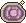
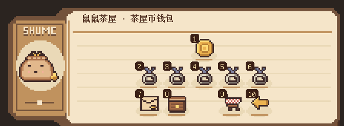
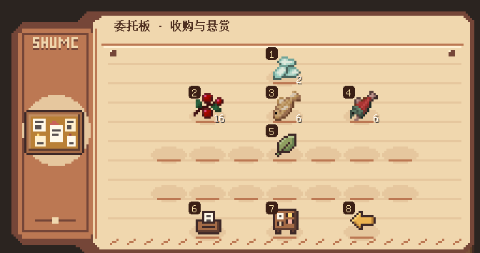
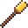
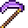
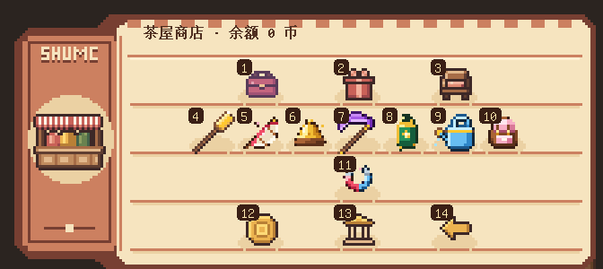
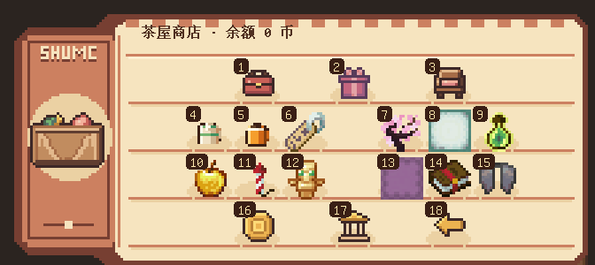

经济 · 茶屋币
茶屋币是全服通用货币：出货、委托、签到、钓鱼都能赚，商店、地皮、锻造、萌宠都要花
茶屋币从哪来
| 来源 | 说明 |
|---|---|
 一键出货 一键出货 /sell | 最主要的收入。把背包里的星级鱼、作物、牧场品、昆虫、工坊成品、魔物核心一键卖掉 |
每日委托 /quest | 每天 8 项，每项 80–120 币 + 补给，全部领完再开全勤礼盒 |
 委托板 委托板 /order | 茶屋 NPC 每日收购 + 玩家互相挂的悬赏 |
 签到 签到 /qiandao | 每天 50 币，每满 7 天额外 100 币 |
 钓鱼里程碑 / 大赛 钓鱼里程碑 / 大赛 | 图鉴里程碑最多一次 2000 币；钓鱼大赛前三名 200 / 120 / 80 币 |
 冒险公会 冒险公会 | 讨伐悬赏、试炼 Boss 奖励大量茶屋币和徽章 |
| 开店 | 在自己的店铺里用 /cshop 开箱子商店卖给其他玩家 |
 晶洞 | 挖矿掉的晶洞敲开能出 15–140 币 |
一键出货 /sell
/sell（别名 /出货、/chuhuo）只扫描主背包，不会卖掉盔甲栏和副手里的东西（比如副手诱饵）。原版石头、木头这类东西不收。
今日热卖
每天会有一样东西热卖，出货单价翻倍（例如「🎃 秋实南瓜收购：南瓜 12 币 / 个」）。上线时聊天栏会提示，主菜单的「茶屋钱包」也会显示。
每日额度：换着玩最划算
为了不让某一个玩法一枝独秀，出货收入按六类玩法分别计算每日额度：鱼、作物（含香料和原版作物）、牧场、昆虫、工坊、冒险。
| 同一类今天已经卖了 | 按多少结算 |
|---|---|
| 0 – 5,000 币 | 全价 |
| 5,000 – 10,000 币 | 70% |
| 10,000 币以上 | 40% |
- 专精、天赋、自然学家等个人出货加成合计最多 +35%；社区献祭、热卖日、运势、节日的加成另算。
- 同一种物产卖太多也会慢慢降价（每日饱和），4 星珍品同样计入。
- 所以：今天钓鱼卖够了，就去种种田、捕捕虫、做做工坊，收入不会被压。
钱包、转账与富豪榜
/money（别名/bal、/余额、/茶屋币）：看余额和全服富豪榜前 5；/money 玩家名看别人的余额。/pay（别名/转账）：不带参数打开头像面板选在线好友；或/pay 玩家名 金额。


每日委托 /quest
每天刷新 8 项小委托，完成后在 /quest 里点领奖。8 项全部领完再开一个全勤礼盒：150 茶屋币 + 5 福气值 + 当季香料 ×1。
| 委托 | 目标 | 奖励 |
|---|---|---|
| 🎣 茶屋垂钓手 | 钓起 5 条鱼 | 120 币 + 附魔之瓶 ×4 |
| 📦 勤劳出货人 | 用一键出货卖出 10 件物产 | 100 币 + 金胡萝卜 ×4 |
| 🍵 茶屋美食家 | 签到，或吃 1 份茶屋美食 / 工坊饮品 | 80 币 + 樱花抹茶拿铁 |
| 💎 矿洞鉴宝师 | 敲开 1 个神秘晶洞 | 90 币 + 铁锭 ×3 |
| ⚒ 铁匠学徒 | 在锻造坊精炼 / 升星 / 铭刻 / 修补任意 1 次 | 110 币 + 星露精铁锭 |
| 🐮 星露牧场主 | 喂牧场动物或收 3D 加工机，累计 3 次 | 100 币 + 樱花精料 ×2 |
| 🦋 生态捕虫客 | 用捕虫网抓 3 只昆虫 | 100 币 + 附魔之瓶 ×4 |
| 🍳 茶屋掌勺人 | 在 3D 宴席灶台出锅 1 道大餐 | 120 币 + 樱花抹茶拿铁 |
委托板与悬赏 /order
/order（别名 /悬赏板）分两部分：
- 茶屋 NPC 收购：每天几单（例如三花猫可可收 6 条生鳕鱼），每人每天每单 1 次，报酬是茶屋币 + 福气值 + 经验。还有一单「主厨委托」专收专精特产或工坊成品，报酬更高。
- 玩家悬赏：主手拿 1 个想收的物品当样本，输入
/order post <数量> <赏金>挂单（数量 1–64，赏金至少 10 币，发布时先扣）。每人最多 3 单，全板最多 14 单。别人交货后，你不在线时货会存进收件箱，用/order claim领。


茶屋杂货铺 /shop
/shop（别名 /商店、/杂货铺）有三个分页：茶屋神器、礼盒与珍藏、装饰家具。
茶屋神器





礼盒与珍藏
抹茶拿铁、冰美式、命名牌、樱花建造礼盒、柔光建筑礼盒、烟花，以及限购的附魔之瓶 ×16（每日 2 次）、金苹果 ×2（每日 2 次）、不死图腾（每周 1 次，2800 币）、潜影盒（每周 2 次，2400 币）、经验修补附魔书（每周 1 次，3800 币）、鞘翅（终身 1 次，6800 币）。
装饰家具
能摆在家里、右键互动的 3D 家具：桌面茶具（品茶回血）、星露樱花盆栽、暖黄小台灯、晴天风铃、芝芝软垫坐垫；另有两件要全服完成「❄ 冬季暖炉包」献祭后才能买。






许愿池里福气值 ≥100 时，主城商店打 9 折；换到「👑 锦鲤大善人」称号后永久 9 折。见 锦鲤许愿池。
荣誉称号 /title
/title 解锁并切换聊天名字前的小称号，已解锁的随时免费切换，也可以隐藏。
| 称号 | 价格 |
|---|---|
| 🌸 樱花茶客 | 免费（新人默认） |
| 🎣 垂钓大师 | 200 币 |
| 🍳 茶屋主厨 | 300 币 |
| 🐾 萌宠饲养员 | 400 币 |
| ⚔ 秘境勇者 | 600 币 |
| 👑 茶屋名誉镇长 | 1200 币 |
另外，专精到 Lv10 / Lv20 会自动获得专精称号，许愿池福气商店能换「👑 锦鲤大善人」。